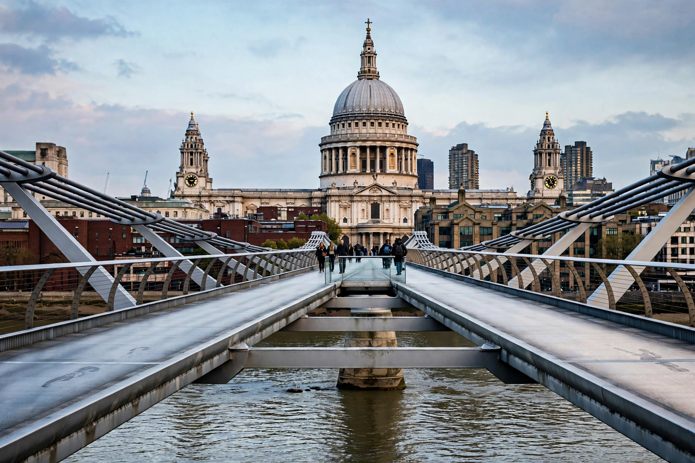

St Paul's Cathedral

St Paul's Cathedral is an Anglican cathedral in London, England, the seat of the Bishop of London and the mother church of the Diocese of London. It sits on Ludgate Hill, the highest point of the City of London, and is dedicated to Paul the Apostle. The present structure, designed by Sir Christopher Wren, was completed in 1710.
History
A cathedral has stood on the site since AD 604. The medieval church, "Old St Paul's", was destroyed in the Great Fire of London in 1666. Wren's replacement — built 1675–1710 in English Baroque style, crowned by a triple-layered dome 365 feet (111 m) high, one of the largest in the world — was the first cathedral built after the English Reformation to be completed in its designer's lifetime. There Wren himself is buried, his epitaph reading Si monumentum requiris, circumspice ("If you seek his monument, look around you").
Significance
St Paul's has hosted state occasions including the funerals of Lord Nelson, the Duke of Wellington and Sir Winston Churchill, the wedding of Charles, Prince of Wales and Lady Diana Spencer (1981), and services marking royal jubilees. Its survival during the Blitz, photographed amid smoke and fire on 29 December 1940, made it an enduring symbol of London's endurance. Its Whispering Gallery and the tombs and monuments of the crypt remain major visitor attractions.
See also: Christopher Wren, London